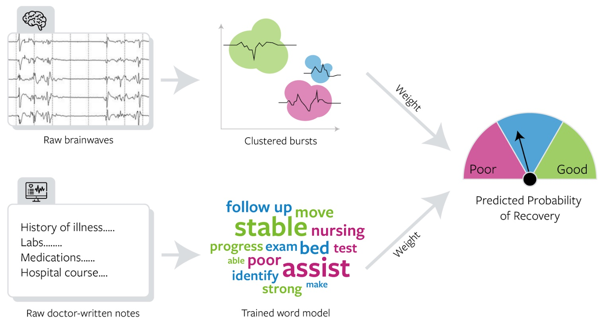
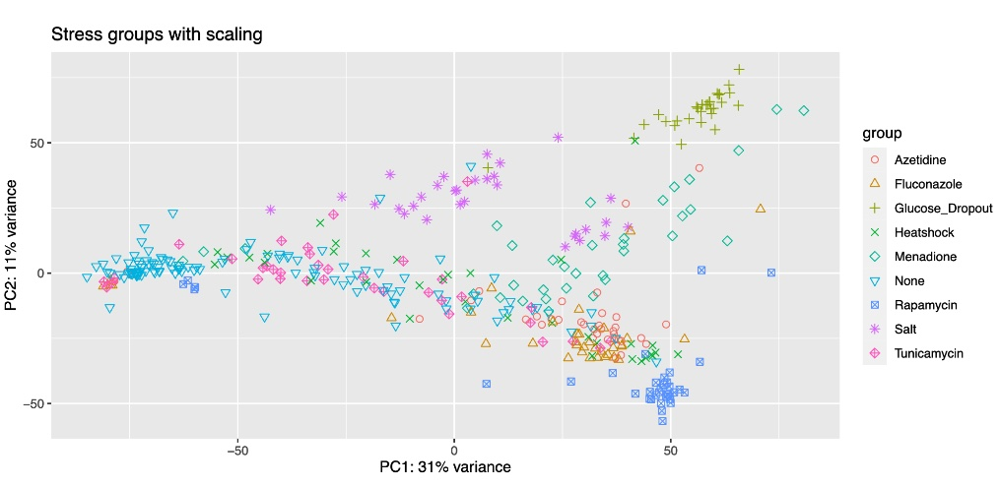
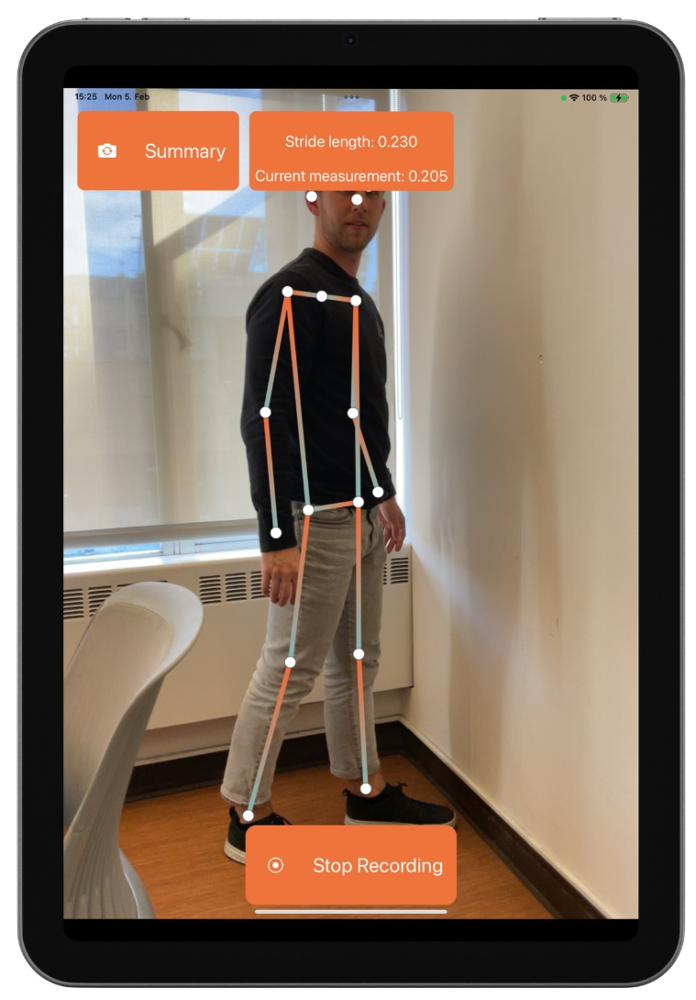

About Me
I am currently a statistician at Abbott in the Diagnostics division. I recently graduated with an MEng in Bioengineering from Berkeley, concentrating on Bioinformatics and Computational Biology. Some of my interests are in genomics, natural language processing (NLP), data engineering, and bioinformatics. Beyond tech, I love to draw, explore cities, and spend time with my dogs.
Please feel free to reach out to me at sophiefurlow [at] gmail [dot] com. Thanks!
University of California, Berkeley
Master of Engineering, Bioengineering
Berkeley, CA. 2023-2024.
Concentration on Bioinformatics and Computational Biology.
Relevant coursework:
- computational and functional genomics
- machine learning and optimization for computational biology
- natural language processing
- genome engineering
- business of healthcare
- communication for engineering leaders
Northwestern University
Bachelor of Science, Biomedical Computation
Evanston, IL. 2019-2023.
Minor in Data Engineering. Magna Cum Laude Graduate. Tau Beta Pi Engineering Honor Society.
Relevant coursework:
- optimization
- statistics and machine learning
- data structures and algorithms
- data engineering & development
- linear algebra & differential equations
- molecular & cell biology
- genetics
Projects
Predicting Coma Recovery with Multimodal Machine Learning
ML, NLP, Python
Transcriptional Analysis of Stress Responses in Yeast
Unsupervised learning, transcriptomics
At-Home Screening for Parkinson's Disease
App development, Swift
Data Engineering Pipeline Design
AWS, Airflow, Pyspark, PostgreSQL
DenseNet Classification of Tumor Images
DL, image segmentation
Predicting Coma Recovery with Machine Learning of Multimodal Data
UC Berkeley and UC San Francisco, 2023-2024
The standard of care in ICUs is to observe comatose patients for several days before making treatment decisions, but early action can lead to better recovery outcomes. We are deploying a model trained on historical patients’ neurophysiological data and doctor-written notes to predict the likely recovery outcome of new patients. The prediction is a decision support tool that helps physicians make earlier treatment decisions to help patients reach a higher level of functional independence post-coma. Using Python, we cluster the similarity of brainwave patterns and use natural language processing to correlate keywords in patients’ notes to their likely recovery outcomes. This work is in the process of publication.
Transcriptional Analysis of Stress Responses in Yeast
Northwestern University and NSF Simons Center for Quantitative Biology, 2021
The goal of the project was to investigate multi-kinase control of environmental stress responsive transcription in yeast. What kinases transmit stress signals and what roles of theirs are contingent on the environment? My research sought to build on research presented in Mace PLOS 2020 that showed how kinases are involved in regulating genes in particular environments. I aligned RNA-seq transcripts to a yeast reference genome using STAR in a computing cluster and analyzed them using DESeq2. Using GO analysis and further research on the genotypes clustered together in PCA-reduced space, I created an ontological tree of molecular functions. I reasoned that the structure revealed in the PCA plot of the first 2 components forms due to common nucleic binding activity.
At-Home Screening for Parkinson's Disease
UC Berkeley, 2024
Here we built PDScreen, a mobile app designed to screen at-risk patients for symptoms of Parkinson's at home. This app prototype combines a questionnaire, speech recognition, finger tapping, and gait analysis. The app is intended to perform parts of the UPDRS (Unified Parkinson’s Disease Rating Scale) screening and relay the information to trained neurologists. The project was developed over a 2-week period as part of the iHackHealth Appathon hosted by UC Berkeley and Apple.
